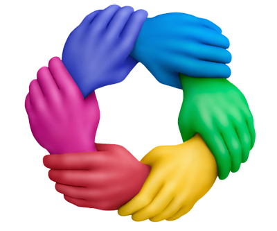

COMBATE À FOME
MUNDIAL E À
ESCASSEZ DE
ALIMENTOS
A UNIÃO FAZ A FORÇA!
“Imagine um mundo onde cada pessoa reconhece a importância da segurança alimentar e da dignidade humana. Nesse mundo, as pessoas se unem para enfrentar os desafios da fome, compartilhando recursos e conhecimentos em um esforço conjunto.”
A união das pessoas tem um poder transformador quando se trata de erradicar a fome em todo o mundo.
Cada indivíduo desempenha um papel vital nessa luta, e quando nos unimos em um objetivo comum,
podemos fazer a
diferença.
Nesse cenário, a união se manifesta de várias formas. Significa que indivíduos, comunidades e
organizações se levantam contra a injustiça da fome e trabalham juntos para enfrentar suas causas
subjacentes. Juntos,
nós:

Promovemos a concientização
Engajamos na educação
Apoiamos projetos locais
Influenciamos politicas públicas
Fazemos escolhas conscientes
A união das pessoas é um impulso coletivo para erradicar a fome. Quando nos unimos em um espírito de solidariedade e compaixão, superamos barreiras e desafios. Juntos, podemos criar um mundo onde ninguém mais sofra com a fome, onde cada pessoa tenha acesso a uma alimentação adequada e onde a dignidade humana seja respeitada. A erradicação da fome é um objetivo alcançável, e cada um de nós tem um papel importante a desempenhar nessa jornada.

Você Conhece IA Generativa?
Inteligência Artificial (IA) generativa refere-se a um tipo de IA capaz de gerar dados, conteúdo ou informações originais que parecem ter sido produzidos por seres humanos. Em contraste com a IA discriminativa, que é projetada para classificar e categorizar dados existentes, a IA generativa é capaz de criar algo novo.
Veja Como Ela Pode Ser Eficiente na Erradicação da Fome
A Inteligência Artificial generativa pode desempenhar um papel significativo na luta contra a fome, oferecendo soluções inovadoras e eficientes. Através da análise de dados e do aprendizado de padrões, a IA generativa pode otimizar cadeias de suprimentos alimentares, melhorar a produção agrícola, diagnosticar e prevenir doenças nas plantas e fornecer orientações nutricionais personalizadas. Essas tecnologias têm o potencial de aumentar a eficiência, reduzir desperdícios, melhorar a qualidade dos alimentos e garantir o acesso a alimentos adequados para populações em risco de desnutrição. A implementação da IA generativa, em colaboração com especialistas e governos, pode contribuir para um futuro mais sustentável e com menos fome em todo o mundo.
CONHEÇA O PROJETO
AgroInvest
A AgroInvest é uma plataforma inovadora que utiliza inteligência artificial generativa para capacitar agricultores e empreendedores rurais. Por meio de recomendações personalizadas e orientação estratégica, a AgroInvest ajuda a melhorar a produtividade, eficiência e sustentabilidade das operações agrícolas. Ao combinar dados agrícolas, análise de mercado e tecnologia avançada, a AgroInvest auxilia na tomada de decisões informadas e na otimização de recursos, promovendo o crescimento econômico e a segurança alimentar em regiões rurais.